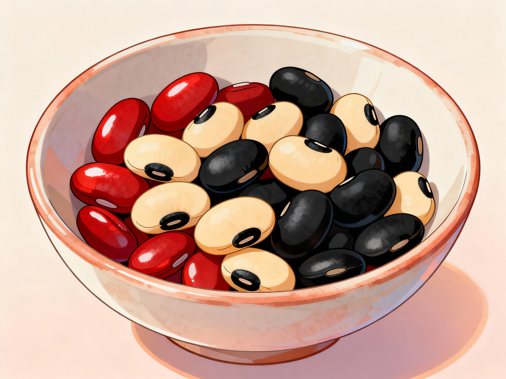

Beans: Simple, Filling, and Full of Fiber
Beans are one of the easiest ways to add plant-based protein and fiber to everyday meals. Many communities grow beans in home gardens because they dry well, store for a long time, and can be cooked in many different ways.
A serving of cooked beans is naturally low in fat and provides a combination of complex carbohydrates, potassium, and iron. The high fiber content can help you feel full longer and may support healthy cholesterol levels when eaten regularly as part of a balanced diet.
In many homes, beans are used in soups, stews, and rice dishes, or simply boiled and seasoned with herbs. When prepared with onions, garlic, and vegetables, they can become a complete and satisfying meal that is gentle on the budget.
Some families also use warm bean dishes as a simple comfort food when someone is feeling tired or recovering from illness, although beans should not replace medical care when it is needed.
General nutrition information for cooked beans is summarized from USDA FoodData Central, the Bean Institute, and NutritionFacts.org discussions on beans and health.